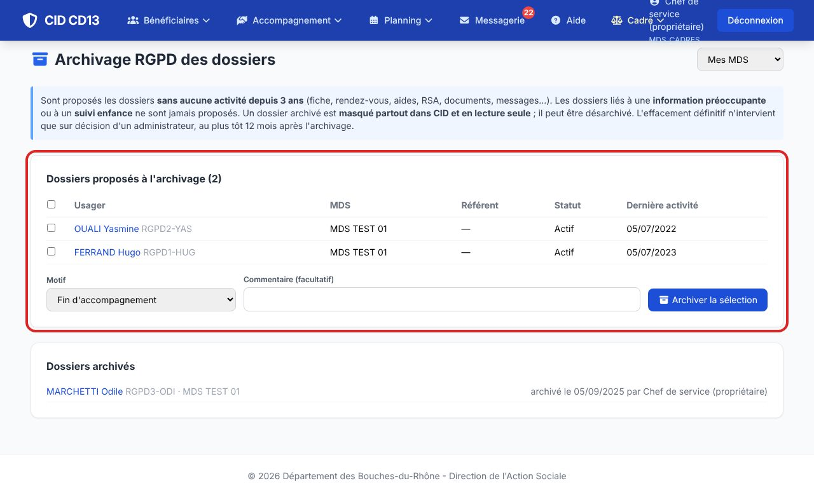
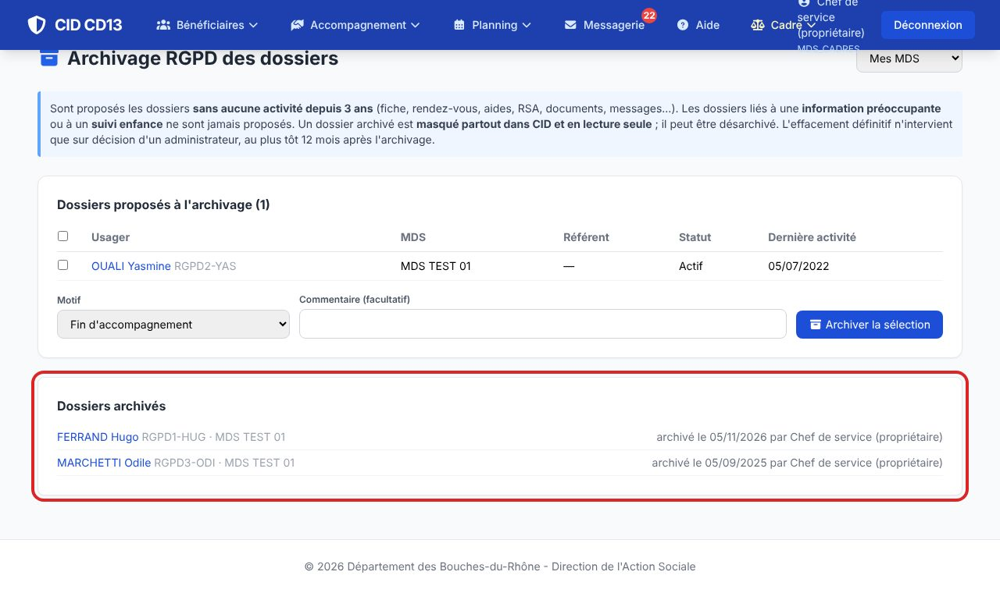
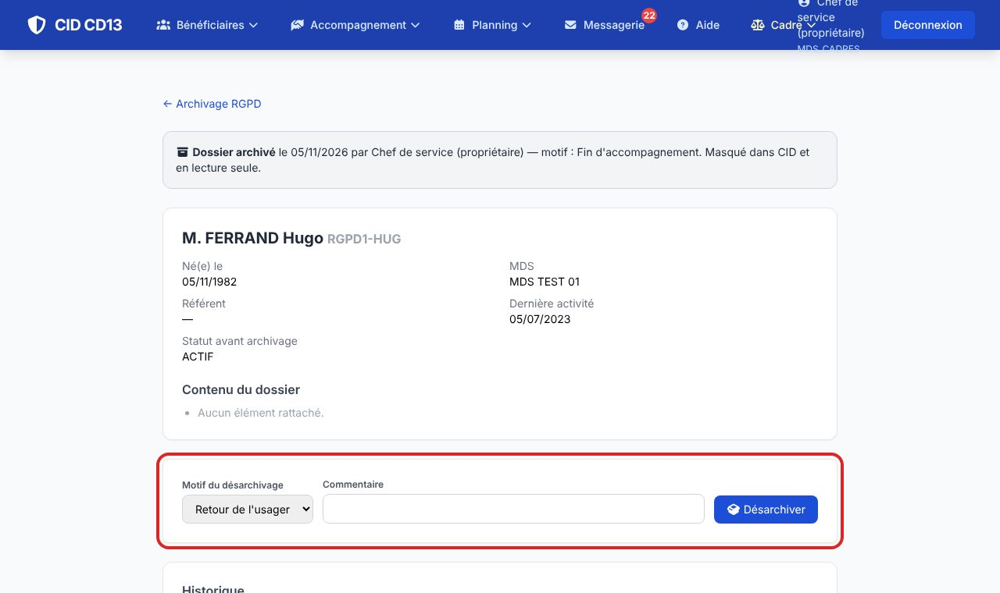
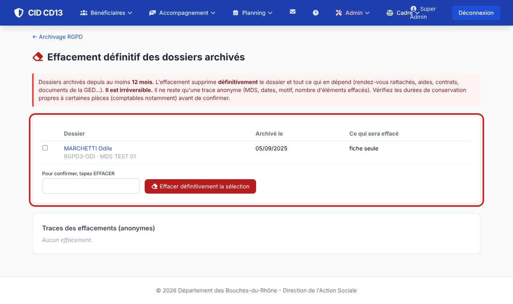

1Voir les dossiers proposés

- Menu Cadre → Archivage RGPD : la liste des dossiers de votre MDS sans aucune activité depuis 3 ans (fiche, rendez-vous, aides, RSA, documents, messages…), avec la date de la dernière activité.
- Les dossiers liés à une information préoccupante ou à un suivi enfance ne sont jamais proposés.
2Archiver

- Cochez les dossiers, choisissez le motif (fin d'accompagnement, sans nouvelles, déménagement…), puis Archiver la sélection.
- Le dossier est masqué partout dans CID (recherche, liste, agenda, famille des proches) et en lecture seule.
3Consulter ou désarchiver

- Dans « Dossiers archivés », cliquez sur le nom : identité, dates, motif et contenu du dossier.
- L'usager revient ? Choisissez le motif puis Désarchiver : le dossier retrouve son statut d'avant.
4Effacer définitivement (administrateur)

- Réservé aux super-administrateurs : Admin → Archivage RGPD → Effacement définitif liste les dossiers archivés depuis au moins 12 mois, avec ce qui sera effacé.
- Cochez, tapez EFFACER, confirmez. C'est irréversible : il ne reste qu'une trace anonyme (MDS, dates, motif).
Bon à savoir
- Durées en mois, réglées en administration : Durées de conservation (USAGER_DOSSIER : 36 mois sans activité avant l'archivage, 12 mois avant l'effacement, tant que le DPO n'a rien fixé). Le DPO remplit le modèle CSV, l'administrateur l'importe.
- Avant d'effacer, vérifier les durées de conservation propres à certaines pièces (comptables notamment) : l'effacement supprime aussi les aides du dossier.
- Les rendez-vous passés restent dans l'agenda de la MDS, sans l'usager ; le journal d'activité perd son nom.
Cliquez sur une image pour l'agrandir. Le cadre rouge montre où cliquer ou quoi remplir. Toutes les données affichées sont fictives.